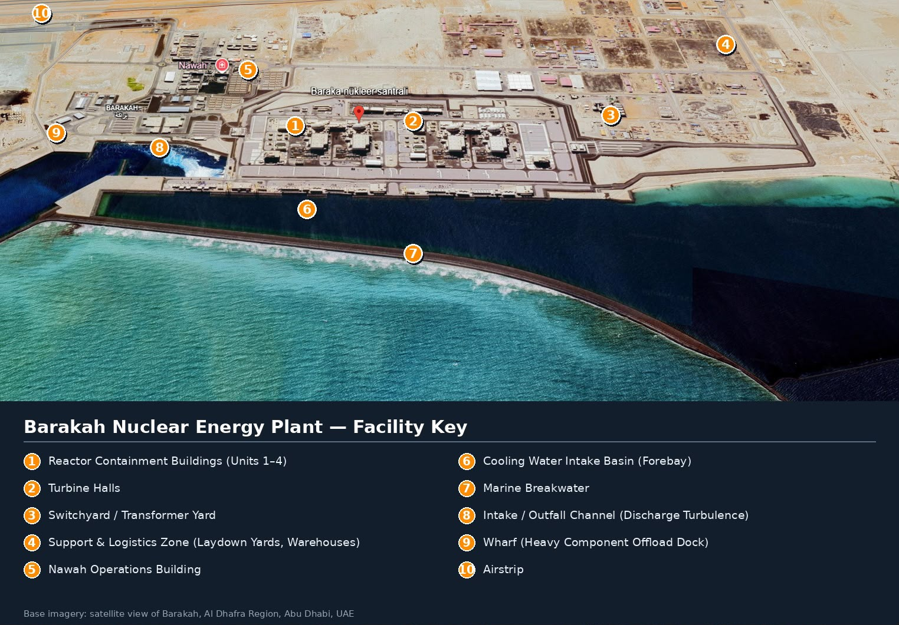

Detect
Scan the wall with camera + LEDs. Computer vision flags candidate polyp colonies.
A two-layer marine system based directly on the original proposal: a self-cleaning inlet mesh for adult jellyfish and an underwater robot for channel-wall inspection and polyp removal.
This keeps the concept inside the marine-side pathway described in the deck. Existing plant screens remain the final protection layer.

The original deck maps the intervention to the breakwater mouth, intake channel and forebay rather than redesigning nuclear systems.
A perforated moving belt loops between two rotating pillars. A fixed scraper cleans the belt on every pass; identical modules can be ganged side-by-side across the inlet.
The robot patrols channel walls, rocks and concrete using camera + lighting for inspection, sonar for navigation, thrusters for precise positioning, a robotic arm for removal, and suction for collection.
The website keeps the mission sequence exactly aligned with the original robot concept while adding the missing operational detail.
Scan the wall with camera + LEDs. Computer vision flags candidate polyp colonies.
Stabilise near the surface and place a gentle scraper or micro-cutter on the target.
Suction captures detached material so it is not simply released downstream.
Verify the cleaned area, log its location, and continue along the mapped channel.
The 3D model visualises the rotating-belt concept from the slides; final dimensions, aperture and hydraulic loading require site-specific engineering.
The 3D robot is a functional concept model based on the hardware callouts in the slide poster, not a final pressure-rated manufacturing design.
Hard-surface inspection is part of the proposed maintenance pathway; local polyp presence and density would need site characterisation.